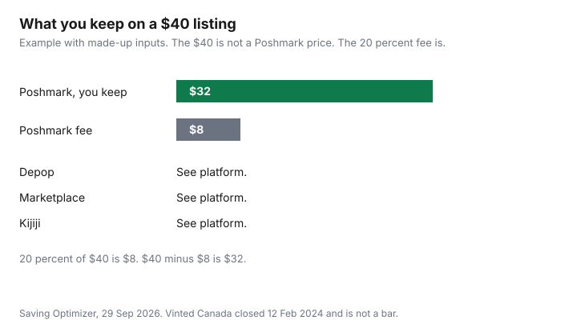

Clothing · Canada
Selling Clothes Online in Canada: Poshmark, Depop, Facebook Marketplace and Kijiji Compared
A full closet is not cash until a buyer pays and the fee is off the price. This page compares four places Canadians still name, using only fee rules that were on a platform page as of 29 Sep 2026. Poshmark Canada's Get Started guide states the commission. Vinted's own Canada notice says the platform closed on 12 February 2024. Depop's Canada homepage and its seller-fee help page returned an access error, so Depop's fee is written as see platform. The $40 sale below is an example with made-up inputs. It is not a price Poshmark quoted. Buying the other direction is the thrift guide. This is education, not tax, legal, or selling advice.
Key takeaways
- Vinted.ca says the Canada platform closed on 12 February 2024. Do not list new items there.
- Poshmark's Get Started guide: under C$20, a flat C$3.95. At C$20 or more, 20 percent of the listing price, and you keep 80 percent. A prepaid label is provided. The fee-policy text says the buyer pays shipping.
- On an example $40 listing price, 20 percent is $8, so $32 stays before any heavier-label upgrade. That $40 is made up.
- Depop, Facebook Marketplace, and Kijiji fees are not confirmed here. Write see platform, and open the help page yourself before you pick a fee in a spreadsheet.
- Posh Protect refunds an item that never ships or does not match the listing. Fit and change-of-mind are not covered. A case is 72 hours after delivery. Offline trades are not covered.
Which platforms still operate in Canada (Vinted closed in February 2024)
Poshmark Canada is operating. The sell page, the Get Started guide, the shipping guide, and the Posh Protect page are all live on poshmark.ca, and the Protect page footer reads Poshmark Canada, Inc. This guide does not cite a Depop fee; check depop.com/ca for the current seller fee.
This page does not treat that error as proof that Depop left Canada. It also does not treat it as proof of a fee. Facebook Marketplace and Kijiji are still the local boards people use. Check their own fee pages. Vinted is the one with a plain closure. The vinted.ca notice says the Canada platform closed on 12 February 2024, features are no longer available, and accounts without outstanding orders or funds were closed that day. Outstanding payments are a support issue at vinted@vinted.ca, not a place to start a new listing.
Cross-border parcels and counter-tariffs on household goods are in the tariff guide. That guide does not set an apparel or courier threshold, so this page does not invent one. If you ship a shirt to another country, read the carrier and the border agency yourself.
Fees, shipping labels and payouts: what you actually keep
Poshmark's Get Started guide says listing is easy and free, then states the fee in one paragraph. For sales under C$20, a single flat rate of C$3.95, and you keep the rest.
For sales of C$20 or more, 20 percent of the listing price, and you keep 80 percent. In return the guide says Poshmark handles the card transaction, provides a prepaid pre-addressed shipping label, and provides support. The fee-policy page says amounts are in Canadian dollars unless stated otherwise, the buyer is responsible for shipping fees as described in the shipping policy, and Poshmark provides the seller with a prepaid label. The how-to-ship guide says the label arrives with the sale email, postage is already paid, and you drop the parcel at a mailbox if it fits or at Canada Post. The overweight-label guide says the printed label weight is 0.75 kg, you can ship up to 2.5 kg without extra fees, and a heavier label's extra cost is deducted from earnings. That guide does not print the upgrade dollar. Do not invent one.
Payouts, from the same Get Started guide: you can withdraw earnings anytime for free, deposit to a checking account, use other payout options the page names only as other flexible options, or spend the balance on Poshmark. Example with made-up inputs. A listing price of $40 is at or above C$20, so the fee is 20 percent of $40, which is $8, and $32 remains. That arithmetic uses the published percent and a price this page made up. It does not subtract a shipping dollar, because the fee-policy text puts shipping on the buyer, unless you trigger a heavier-label upgrade the guide prices only as extra costs. A second made-up row: a $15 listing is under C$20, so the fee is C$3.95 and $11.05 remains. Depop's fee is see platform. Marketplace and Kijiji are see platform for the same reason.
What sells: brands, condition, seasons
This section is a listing test, not a ranking of brands. Buyers pay for a size that is stated, a brand name that matches the label, and condition you photographed.
Season matters as a calendar fact you already know: a wool coat moves when the weather turns, and a linen shirt moves when it warms up. Listing a coat in July is allowed. Expect it to sit. Stains, odour, and stretched elastic should be in the description. Posh Protect, below, is built around items that do not match the listing. The used household goods guide is the buying-side version of condition. IKEA sell-back is furniture credit, not a clothing payout: IKEA Sell-back and As-Is.
Photos, pricing and listing time vs return
Photograph the front, the label, the flaw, and the measurement you would want if you were the buyer. Natural light beats a filter that hides a colour.
Price from the fee outward. On Poshmark, a listing at C$20 or more keeps 80 percent of that listing price under the guide's formula, before any label upgrade. A listing under C$20 keeps the price minus C$3.95. If your floor is the amount you need in the bank, divide backward only with the formula you verified. For Depop, Marketplace, and Kijiji, leave the fee cell blank until you open the help page. Time is the other cost. A listing that takes you half an hour, plus a post-office trip, can be a poor trade for a very small keep. That is a household choice, not a platform rule.
Local pickup safety and payment scams
Posh Protect does not cover trades or transactions completed off the platform. The Protect page says that when payment for the full value is not exchanged through Poshmark, Poshmark cannot guarantee that both people will ship and pay, and you bear the risk.
For Marketplace and Kijiji, this guide does not cite a buyer-protection policy, so do not assume one. The used-goods guide already walks through Marketplace payment cautions, including fake payment messages. Use a public meeting place, tell someone where you are going, and hand over the garment when you have payment you can confirm, not a screenshot you cannot. Do not move the chat to a link you did not expect. The rental-hunting guide is about leases, not shirts, and it is the reminder that a local listing site is not a referee. If a buyer wants the item shipped off-platform, you are outside Posh Protect and outside any protection described here.
Taxes: when casual selling might become business income
Guide T4044, Employment Expenses, is about employees deducting work costs. It is not the rule for money you receive when you sell a used shirt.
Guide T4002, chapter 3, says you cannot deduct personal expenses and that you enter only the business part of an expense on the business forms. That sentence is about deductions, not about whether a closet clean-out is a business. This guide does not cite a CRA page that sets a dollar threshold for when selling personal items becomes business income. Do not copy a threshold from a forum. Read the CRA pages on business income and on personal-use property, or ask a tax professional, before you treat a year of sales as either a hobby or a business. The tax-credits guide is the household credit map, not a resale ruling. Education only. Not tax advice.
| Platform | Selling fee | Shipping label | Payout | Buyer protection |
|---|---|---|---|---|
| Poshmark Canada | Under C$20: flat C$3.95. C$20 or more: 20 percent of the listing price. You keep 80 percent on that second band. | Prepaid, pre-addressed label. Buyer pays shipping, per the fee policy. Up to 2.5 kg without an extra fee. Printed label weight 0.75 kg. Heavier upgrade cost deducted from earnings. Dollar of the upgrade: see platform. | Withdraw anytime for free to a checking account, other payout options, or spend on Poshmark. Get Started guide. | Posh Protect: full refund if the item never ships or does not match the listing. Otherwise sales are final. Fit and change-of-mind are not covered. Open a case within 72 hours of delivery. Offline trades are not covered. |
| Depop | See platform. Check Depop's seller-fee help page. | See platform. | See platform. | See platform. |
| Facebook Marketplace | See platform. | See platform. Local pickup has no label until you agree to ship. | See platform. | See platform. Do not assume Posh-style coverage. Read the used-goods guide for payment cautions. |
| Kijiji | See platform. | See platform. Local pickup is the usual clothing pattern. | See platform. | See platform. |
| Vinted Canada | Not a current channel. Closed 12 Feb 2024, per vinted.ca. | Not available for new sales. | Outstanding funds: contact vinted@vinted.ca. Not a new payout path. | Not a place to open a new order. |
Example with made-up inputs. The sale prices are not from Poshmark. The percents and the flat fee are.
| Made-up listing price | Poshmark fee | You keep on Poshmark | Depop, Marketplace, Kijiji |
|---|---|---|---|
| $15 | C$3.95 flat, because the price is under C$20 | $11.05 | See platform |
| $40 | 20 percent of $40, which is $8 | $32 | See platform |

Sources
- Poshmark Canada, Get Started guide, poshmark.ca/posh_guide/get_started_on_poshmark, as of 29 Sep 2026. Flat C$3.95 under C$20. 20 percent of the listing price at C$20 or more. Free withdrawal to a checking account. Prepaid label.
- Poshmark fee policy, poshmark.ca/fee_policy, as of 29 Sep 2026. Buyer is responsible for shipping fees. Seller receives a prepaid label. Amounts in Canadian dollars unless stated otherwise.
- Poshmark overweight-label guide, as of 29 Sep 2026. Printed label 0.75 kg. Up to 2.5 kg without extra fees. Heavier upgrade deducted from earnings. No upgrade dollar printed.
- Posh Protect, poshmark.ca/posh_protect, as of 29 Sep 2026. Refund if the item never ships or does not match the listing. 72 hours after delivery. Returns shipped within 5 days of approval. Fit and offline trades excluded. Footer: Poshmark Canada, Inc.
- Vinted Canada notice, vinted.ca, as of 29 Sep 2026. Platform closed 12 February 2024.
- Depop Canada, depop.com/ca, and Depop seller fees help, as of 29 Sep 2026. No Depop percent is used.
Frequently asked questions
Which app is best for selling clothes in Canada?
This page does not rank them. Poshmark Canada published a fee you can subtract, and Vinted Canada closed on 12 February 2024. This guide does not cite clothing fees for Depop, Facebook Marketplace, or Kijiji, so their keep amount is see platform. Pick the channel whose fee you have read, whose shipping you will actually do, and whose protection you understand.
How much does Poshmark take in Canada?
The Get Started guide, as of 29 Sep 2026, says sales under C$20 pay a flat C$3.95 and you keep the rest. Sales of C$20 or more pay 20 percent of the listing price and you keep 80 percent. On an example listing price of $40, that is $8 and you keep $32. The $40 is made up. A heavier shipping label can deduct an extra cost the upgrade guide does not price in dollars.
Is Vinted available in Canada?
No. The notice on vinted.ca says the Canada platform closed on 12 February 2024 and that features are no longer available. Accounts without open issues were closed that day. If you still have an outstanding payment, the notice points you to vinted@vinted.ca. It is not a place to list a new item.
How do I avoid scams on Marketplace?
Posh Protect does not cover off-platform trades, and this guide does not cite a Marketplace protection policy you can hide behind. Meet in a public place, keep the conversation on the listing, and hand over the clothes when payment is real, not a screenshot. The used household goods guide covers fake payment messages in more detail. If someone pushes you to a link or a payment app you did not choose, stop.
Do I pay tax on money from selling used clothes?
This guide does not cite a CRA threshold that turns a closet clean-out into business income, so it will not invent one. Guide T4002 says you cannot deduct personal expenses and that only the business part of an expense goes on the business form. That is a deduction rule, not a ruling on your sales. Read the CRA pages on business income and personal-use property, or ask a tax professional. Education only, not tax advice.
Researched and drafted with AI assistance and fact-checked against official Canadian sources. How we create content.